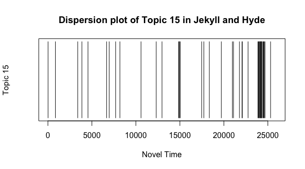
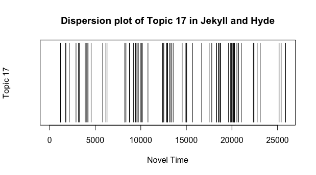

For these dispersion plots, I used the NLTK stopwords list and split the text into chunks of 500 words.
Topic 0

List of Words in Topic 0
- letter
- doctor
- client
- friend's
- mark
- bottle
- handed
- escape
- judge
- swear
Analysis
These words indicate that some sort of letter relating to the doctor was written to a friend or possible client. In this case, the words point to a specific event in which Utterson brings a letter written by Mr. Hyde and one written by Henry Jekyll to a friend of his to compare the handwriting. He discovers through this letter that the handwriting in both Hyde's and Jekyll's letters are almost exactly identical, with Hyde having an artifically different slant in his letters. This provides the first hint that Dr. Jekyll and Mr. Hyde are the same person. However, in the story itself, Utterson does not come to this conclusion until much later. During the events of this discovery, Utterson initially concludes that Jekyll had forged the letter from Hyde to try to protect the man from the law.
Topic 1
List of Words in Topic 1
- city
- ten
- corner
- along
- by-street
- interest
- sound
- mind
- two
- face
Analysis
These words indicate that some event occurred on a by-street in the city. Involved with this event is noise and a face. Considering that much of the time, characters are reacting to the ugliness of Hyde's face, it can only be assumed that these events include Hyde being strongly involved. As seen in the plot above, such an event occurs twice near the beginning of the novel with some smaller concentrations towards the middle and end. The chunk at the very beginning correlates perfectly with the first portion of the book, in which Mr. Utterson and his kinsman, Mr. Enfield, talk about a mysterious door on one of the by-streets of London. Mr. Enfield here recalls a story relating to that door in which Mr. Hyde attacks a child, then goes through that door and retrieves a check for the parents of the girl in order to pay for the damages done to her. An attack would almost certainly have the elements of noise and Hyde's face, and the fact that it happens on a corner only further indicates that this topic mostly speaks about events strongly involving Hyde.
The second chunk near the beginning of the novel occurs at the exact point where Utterson decides to stake out the aforementioned door in hopes of meeting Hyde. As indicated by the dark markings, Utterson does succeed. He goes on to describe Hyde's face from there.
The chunk from the 10,000 word mark matches up with, once again, the event in the novel concerning Utterson's friend, Mr. Guest, analyzing the handwriting of Mr. Hyde and finding that it is nearly identical to Dr. Jekyll's. What is notable about this timeframe, however, is that soon after this event, we find that Dr. Jekyll begins coming out of seclusion and entering the city again. It is possible that Stevenson meant for these incidents to appear side-by-side to at least temporarily throw the reader off the notion that Dr. Jekyll and Mr. Hyde are one and the same. However, Jekyll's sociable behavior stops just as suddenly as it began, once again piquing the reader's interest in the mystery of Jekyll's strange mannerisms.
We find further on, towards the 13,000 word mark that there is yet another strong concentration of the words listed in Topic 1. This time, the important event in the novel they point towards is when Poole and the rest of Dr. Jekyll's servants call Utterson to the house because they are afraid that Mr. Hyde has done something terrible to their master. It makes great sense here why words associated with the city would show up: Utterson and Poole must first navigate the sprawling streets of London before they reach Jekyll's house. The entire section is filled with a sense of great urgency and confusion, two emotions that London's streets may invoke when it is late at night and there is a crisis happening.
The final large concentration of topic words happens towards the end of the novel near the 25,000 word mark. At this point, we are now no longer seeing the story through the eyes of Mr. Utterson, but of Dr. Jekyll himself. Jekyll writes a letter describing in detail how Mr. Hyde came to be and what it was like being able to change between two personalities. He describes in great detail about the joy and thrill he felt being able to prowl London's streets as the wicked Mr. Hyde, finding catharsis in committing crimes. Then, when the morning comes, he transforms back into Dr. Jekyll so that the police are none the wiser. The city can thus be argued to be an extremely important setpiece in Stevenson's novel. It acts as both a backdrop for where the events of the novel take place and a possible corrupting influence on the once-noble character of Dr. Jekyll.
Topic 2
List of Words in Topic 2
- said
- Utterson
- man
- one
- Jekyll
- Hyde
- lawyer
- upon
- like
- would
Analysis
This set of words is mostly concentrated on the characters. We see the three main characters of Utterson, Jekyll, and Hyde featured here, as well as Utterson's occupation. The word "said" being included here indicates that the novel is extremely character and dialogue-driven. Both of these facts are quite true. In addition, there is a distinct lack of women names in the compiled list. This indicates that the novel is also male-based, which is also true.
Topic 3

List of Words in Topic 3
- maid
- victim
- heavy
- stick
- lane
- gentleman
- body
- seen
- broken
- particularly
Analysis
The event Topic 3 points to is easy to identify: it takes place at the point in the story in which both Utterson and the reader finds out about Mr. Hyde's first murder. In this particular scene, we hear from a maid who witnessed the murder about how Hyde used a heavy walking stick to beat a gentleman to death. The maid goes on to describe how the body seemed very broken.
Topic 4

List of Words in Topic 4
- guest
- clerk
- document
- death
- sir
- note
- tempted
- autograph
- public
- handwriting
Analysis
This list of words, once again, points towards Mr. Guest's analysis of Mr. Hyde's handwriting. This is the event indicated near the 10,000 word mark. However, there also seems to be a set of lines just before and just past the 15,000 word mark.
The set just before the 15,000 word mark, interestingly enough, has little to do with Dr. Jekyll's or Mr. Hyde's handwriting. Rather, it makes much greater use of the words "sir" and "death." In this particular moment, the servant, Poole, is speaking to Utterson about his great concern for Dr. Jekyll. He talks about how he fears that someone - likely Mr. Hyde - has murdered Dr. Jekyll and taken his place as master of the house, but hides away so that the servants never see his face. Throughout this conversation, Poole addresses Utterson as "sir" to indicate the lawyer's superiority. This provides an interesting examination on the dynamics of class within society at the time. Even though Utterson is technically not Poole's master, he is still addressed as a superior by the butler.
The set just after the 15,000 word mark, once again, makes great use of the word "sir." However, it also makes use of the idea of a handwritten document or note and the death of a friend. In this case, the Utterson and the reader are in the middle of reading a letter from the late Dr. Lanyon about how he witnessed Dr. Jekyll changing into Mr. Hyde. This event traumatized Lanyon so much that he would eventually die, with this letter being the last thing he ever writes. At this point, it can be said that Stevenson combines the handwritten letters and the class distinctions of society to produce a letter from Lanyon that reveals almost all of Dr. Jekyll's darkest secrets.
Topic 5

List of Words in Topic 5
- two
- even
- life
- die
- evil
- pleasures
- months
- made
- side
- moral
Analysis
This word list almost certainly captures two of the greatest themes found in the novel: the ideas of duality and morality. As one can clearly see in the plot, these two themes occur mostly at the beginning and the end of the novel.
The presence of the themes at the beginning of the novel introduces the idea of morality and duality early-on. We encounter Mr. Hyde for the first time through Enfield's story of the door and hear from his description that he is evil. We also get introduced to the idea of two, as Enfield and Utterson are described in the opening lines of the novel as a pair. Although Enfield will not appear again once he finishes his story about the door, the reader is nevertheless introduced quickly to the idea of two very early on. It seems almost fitting, then, that as the novel moves towards a close, the idea of two and the morality associated with two is mentioned more and more often, particularly in terms of Dr. Jekyll's explanation of his experiment and the subsequent birth of Mr. Hyde. The large stretch of dark patches at the very end of the novel seems to bring The Strange Case of Dr. Jekyll and Mr. Hyde full-circle. The novel begins with two people discussing the strangeness of Mr. Hyde, and the novel ends with the death of two men: both Dr. Jekyll and Mr. Hyde.
Topic 6

List of Words in Topic 6
- visitor
- curiosity
- ordinary
- remember
- sense
- unknown
- person
- struck
- set
- conduct
Analysis
The greatest concentrations of this set of words occurs during the second half of the novel, at around the 17,000 word mark and just before the 25,000 word mark. This set of words seems to indicate that a curious visitor arrived at some point who was either memorable or invoked memory. This person was likely a stranger. If this assumption were applied to the 17,000 word mark, one would almost immediately see that this is indeed the case. At the 17,000 word mark, the reader and Utterson are reading Dr. Lanyon's letter. In this letter, Lanyon details his encounter with Mr. Hyde, in which he witnesses the transformation into Dr. Jekyll.
For the word set just before the 25,000 word mark, this matches up perfectly with Dr. Jekyll's letter, in which he reveals all the secrets of his work to Utterson. At this particular moment, Dr. Jekyll talks about the night after the murder and the simultaneous horror and elation he felt at completing such a crime. He shows here the theme of duality that runs throughout the novel, acknowledging his sense of horror while also portraying an underlying sense of elation. He indicates that he will always remember the night of the murder, for good or for ill.
Topic 7

List of Words in Topic 7
- many
- liked
- others
- ill
- clear
- secrets
- past
- things
- chief
- friendship
Analysis
This topic is primarily concentrated at the 5,000 and 10,000 word marks. Based on the words alone, a reader would be able to conclude that at those two points in the novel, the characters are concerned about a past friendship that might be marred by the members of that friendship keeping secrets. This is quite possibly the case with the 5,000 word mark, as careful analysis of it points the reader to a small event in which Mr. Utterson attempts to find out more about Mr. Hyde, eventually coming to the conclusion that Hyde is somehow manipulating Jekyll into using his wealth and influence to benefit him. The thought of the two men being one and the same has not yet crossed Utterson's mind as this point. Utterson therefore finds himself reflecting on his past friendship with Dr. Jekyll and wondering what sort of secrets the doctor is hiding that might have him under the control of Mr. Hyde. Of particular note is that soon after this scene, Henry Jekyll appears in the novel for the first time, alive and seemingly well despite Utterson's misgivings.
The 10,000 word point is also highly concerned with a past friendship marred by secrets. At this point in the novel, Utterson visits his and Jekyll's old mutual friend, Dr. Lanyon, who has taken ill after witnessing a great shock. This shock, the reader will learn later, is the shock of seeing Mr. Hyde transform into Dr. Jekyll. This event also occurs right after Mr. Hyde's murder, indicating that Lanyon's illness and the murder might be connected. Indeed, it is; now that Lanyon knows Dr. Jekyll's secret, he shows here that the friendship they once had is now in the past. Lanyon has taken ill and now never wants to see or hear of Henry Jekyll ever again. He is sickened by the depravity that Mr. Hyde shows and is tired of the secrets that Jekyll held so close. Therefore, the reader sees in this scene the end of a strong friendship and the beginning of the secret being unravelled.
Topic 8
List of Words in Topic 8
- creature
- evil
- horror
- countenance
- drugs
- hours
- beyond
- life
- sensations
- pangs
Analysis
The words of Topic 8 occur most often towards the end of the novel, during the time Utterson reads Jekyll's final letter to him detailing the full extent of Dr. Jekyll's connection with Mr. Hyde. All of the words found in Topic 8 are those that describe exactly what kind of creature Mr. Hyde is: an evil person with a horrific countenance born from a drug and Dr. Jekyll's hubris. The fact that Jekyll alternates between using the more positive-sounding "sensations" and the more negative-sounding "pangs" once again puts forth the idea of a duality in human nature. Jekyll at first is excited by his discovery. He embraces Hyde as another side of himself and loses himself in the pleasure of revelry and general misdeeds without harming the reputation of himself as a doctor. However, as his time as Mr. Hyde grows darker and darker, Jekyll begins using words such as "evil" and "horror" to describe what Hyde has become. The fact that "hours" shows up in this set of words as well gives off the sense that both Jekyll and Hyde are finite. Hours shows the passage of time, indicating that no matter how noble and good Jekyll seems to be, and no matter how evil wicked wicked Hyde is, they are both subject to time's passage. Good and evil is therefore made a struggle that is not necessarily eternal; both are subject to time in the end.
Topic 9

List of Words in Topic 9
- poole
- sir
- voice
- butler
- that's
- it's
- master
- servant
- candle
- there's
Analysis
This topic almost completely surrounds the topic of Poole, Dr. Jekyll's butler. Poole appears throughout the story, first appearing as an informant on Mr. Hyde's activities in Dr. Jekyll's home, then appearing as the driving force that causes Utterson to eventually come upon Dr. Jekyll's secret.We see once again the theme of duality in this set of words, as "master" and "servant" make an appearance, as well as the honorific "sir." Poole therefore represents the duality of the master and servant relationship. In this case, Pooole is acting in the dual role as a servant loyal to his master and a worried caretaker who drives Utterson towards the truth.
Topic 10
List of Words in Topic 10
- drawer
- letter
- book
- understood
- colleague
- midnight
- contents
- reason
- rose
- powders
Analysis
This set of words points to events detailed in Lanyon's narrative. Most specifically, it details the night when Lanyon, on Dr. Jekyll's written request, retrieves a packet of strange contents - including powders and draughts - from Dr. Jekyll's home and keeps it with him until Mr. Hyde shows up at midnight to claim it. It is during this encounter that Lanyon discovers the truth about Dr. Jekyll and Mr. Hyde, a truth so shocking that he takes ill and later dies.
Topic 11
List of Words in Topic 11
- street
- woman
- fog
- seen
- shop
- many
- brown
- cab
- latter
- lamps
Analysis
The two strongest concentrations of Topic 11 occur at the very beginning of the novel and around the 7,000 word mark. Both of these point to incidents in the book in which Mr. Hyde attacks someone in the street. In the earlier instance, it is Mr. Hyde attacking a young girl and stomping on her. In the second case, it is the night of the murder on a foggy night. These words therefore seem to indicate where Mr. Hyde tends to operate when committing his most heighnous deeds. The streets of London therefore become a terrifying place in the novel, as the characters and reader have no idea what horror lurks in the shadows. In this case, Mr. Hyde's wickedness seems to permeate London's streets, much like the fog seen in this topic.
Topic 12
List of Words in Topic 12
- draught
- supply
- wonderful
- loathed
- finally
- ecstasy
- love
- fall
- days
- fallen
Analysis
The words in this topic point towards Dr. Jekyll's confession, in which he admits to his experimentation with human nature and his depraved actions as Edward Hyde. In particular, the small chunk of lines near the end of the novel indicates the point at which Dr. Jekyll realizes how truly dangerous Hyde has become and how foolish his experiment was. The words "wonderful" and "ecstasy" are all used using Dr. Jekyll's account of Hyde's first murder. This is indicative of how at first, being Mr. Hyde was freeing for Dr. Jekyll. He is able to do whatever he wants without harming his reputation. However, this wonderful ecstasy soon fades away and is replaced with horror and loathing. Jekyll then takes a draught hoping to erase Hyde for good. However, this is only the beginning of Dr. Jekyll's downfall. After this event, Dr. Jekyll finds that he now randomly changes into Mr. Hyde without needing to drink the draught first. In addition, he finds that he spends less and less time as Dr. Jekyll from that point onwards. Hyde is growing stronger and more dangerous, to the point where Dr. Jekyll is now becoming the less dominant personality.
Topic 13
List of Words in Topic 13
- door
- several
- times
- turned
- theatre
- cabinet
- may
- body
- lying
- clothes
Analysis
Interestingly enough, Utterson's actions in The Strange Case of Dr. Jekyll and Mr. Hyde begin and end with a door. The novel opens with Mr. Utterson's cousin, Enfield, pointing out a door associated with Mr. Hyde and it ends with Utterson and Poole breaking down a door in order to rescue Dr. Jekyll, who they perceive to have been attacked by Mr. Hyde. The door would also continue to appear as a literary device when Utterson meets Mr. Hyde for the first time after stalking a door for several weeks, and many crime scenes and evidence of Hyde can be found behind closed doors. The word "cabinet" is also interesting, as we know that most cabinets have doors and Dr. Jekyll kept many of his powders and potions inside his cabinet. In any case, the greatest concentration of this topic - at around the 14,000 word mark - points towards the aforementioned moment in which Utterson and Poole break down the door to Dr. Jekyll's office. They find the cabinet open, the office a mess, and a body lying on the floor. The body belongs to Mr. Hyde, yet Poole is able to identify the clothes as Dr. Jekyll's. The door can therefore represent the strange world that Dr. Jekyll's experiment opened up. It can also symbolize the secrets that Jekyll keeps behind closed doors.
Topic 14
List of Words in Topic 14
- hyde
- edward
- jekyll
- cast
- double
- terror
- soho
- body
- still
- vain
Analysis
This topic encompasses Jekyll and Hyde as a duality, a concept that I believe is the main theme of the novel. Jekyll and Hyde exist throughout the novel, first as seemingly separate entities, but as the time goes on, we find that they become more and more connected. The final twist of this novel is that the reader and Utterson finds out the two are literally the same person - essentially, Jekyll and Hyde are two sides of the same coin. They are two personalities who share the same body, one who enjoys inflicting terror on others, the other tired of living life as a highly moral doctor. It is Jekyll's vain experiment that kicks off the events of the novel, and it is Jekyll that pays for it in the end as the delicate balance between the two personalities gets upended and Mr. Hyde slowly becomes the stronger personality.
What is interesting here is the inclusion of the word "soho", a location in the novel. Soho is arguably another presentation of duality. Because Dr. Jekyll is the master of his manor, it would look very strange for Mr. Hyde to spend so much time there. To fix this, Jekyll opted to open a house for Hyde in Soho. This very room would later be raided after Hyde's murder of a young gentleman, with Utterson and the police finding vital clues such as the murder weapon (a walking stick) and burned papers. The walking stick is yet another clue that Hyde and Jekyll are one and the same; Utterson mentions there in Soho that the stick was once a gift from him given to Dr. Jekyll.
Topic 15
List of Words in Topic 15
- clothes
- enter
- smiled
- lighted
- gallows
- conceal
- chattering
- fury
- boldness
- closed
Analysis
The topic only appears briefly twice in the novel. First, around the 15,000 word mark, then just before 25,000 words. The first instance of this topic appearing happens right as Utterson and Poole burst into the doctor's office in hopes of rescuing him from Mr. Hyde. They find Hyde's body on the floor, still twitching, but dead from the poison he had just consumed. The second instance points to Dr. Jekyll's description of what it is like to be Mr. Hyde. At this point in his narrative, Mr. Hyde has already committed the murder. He is fully aware that if Hyde were caught, he would be sent to die at the gallows. Despite this, Jekyll notes that he tends to be much bolder as Hyde and more willing to take on challenges that Dr. Jekyll would normally shrink back from. Therefore, this topic is arguably a group of words that describe and characterize Hyde.
Topic 16
List of Words in Topic 16
- enfield
- cheque
- family
- court
- really
- windows
- it's
- child's
- point
- best
Analysis
This topic seems to be mostly scattered throughout the novel, with the greatest concentrations of words from the topic occuring at the beginning and near the end. Both of these match up with the moment that introduces the reader and Utterson to Hyde. The first instance near the beginning of the novel matches up with Enfield's narrative of Hyde stomping on the child. The instance at the end conveys this same incident through the eyes of Dr. Jekyll. This event is important enough to be repeated twice, as it represents how far Hyde's wickedness is capable of extending before the murder. Hyde is a savage and sadistic person who stomps on the child for fun. Rather than being arrested, however, he pays the child's family a large sum of money before disappearing into the night. None of this takes into account the trauma likely inflicted on the child's psyche, indicating that the child is more of a sum of money to Hyde and her family than a living, breathing person.
Topic 17
List of Words in Topic 17
- suddenly
- death
- throw
- hold
- heard
- sort
- far
- knew
- true
- freshness
Analysis
This topic seems to be scattered throughout the novel, with the greatest concentrations of these words occuring at around 10,000 words, 13,000 words, and 20,000 words. At 10,000 words, Utterson visits his old friend, Lanyon, who has fallen ill as a result of some mysterious shock that the reader and Utterson are not yet aware of. Stevenson describes here how Lanyon looks like death, and how sudden this illness seemed to come for him. The 13,000 word mark points the reader to the moment when Utterson and Poole enters Dr. Jekyll’s home and sees the frightened servants. They do not yet know whether or not Dr. Jekyll is still alive, but all are certain that Mr. Hyde has at some point taken his place. At 20,000 words, we find Dr. Jekyll’s first transformation into Mr. Hyde. The doctor does not yet know the great danger he has placed the world into with his great hubris.
In all three of those events, we find an air of ominous foreboding: Lanyon’s impending death, the discovery of Dr. Jekyll’s secrets, and the birth of Mr. Hyde. All of these cases seem to indicate the beginning of a series of unfortunate events that eventually lead to death. Therefore, although the words chosen for this topic seem nonsensical and random, I would argue that they are all associated with the idea of impending doom.
Topic 18

List of Words in Topic 18
- raged
- fled
- followed
- break
- cause
- pedant
- spirit
- private
- suppose
- made
Analysis
The darkest black bars on the Dispersion Plot can be found near the end of the novel. Based on earlier results, a reader would therefore find the greatest concentration of these words in Dr. Jekyll’s confession. The two events within the confession that the dispersion plots point to are Jekyll’s reflections on his many transformations into Mr. Hyde and his composing of the letter to Dr. Lanyon just after the murder. in both of these cases, Jekyll describes the addictive quality of Hyde’s actions: he is happy to rage and revel in the spirit of maliciousness, making the people around him flee. Topic 18 can therefore arguably be a set of words that at least somewhat describe the spirit behind Hyde’s actions. He breaks and rages and causes people to flee, all while living as Dr. Jekyll’s addictive private life. When Jekyll comes back to himself, he is simultaneously horrified and excited by what Hyde does, which fuels his addiction to the drug that changes him into Mr. Hyde. However, horror soon fills him on the night of the murder, and he realizes too late that he is allowing hey to become the dominant personality.
Topic 19
List of Words in Topic 19
- lanyon
- forth
- disappearance
- lawyer's
- private
- case
- eagerness
- affected
- confined
- surrounded
Analysis
The final topic in this set of 500 word chunks points towards an event that greatly concerns Dr. Lanyon and Utterson, as indicated by Lanyon’s name appearing here and Utterson’s occupation. In this case, this event occurs soon after Lanyon’s death, in which Utterson receives a letter written in Lanyon’s own hand that would be for his eyes alone. Utterson is eager to open the letter and find out the mysteries surrounding the death of his old friend, but such eagerness is quickly tempered when he opens the envelope and finds another sealed letter within that states it is to not be opened until the death or disappearance of Henry Jekyll.
At this point, Utterson pauses and notices in particular the word “disappearance.” Such a word occurs earlier in the novel, where Utterson notes that Dr. Jekyll’s will denotes that, in the case of his death or disappearance, all of his possessions would go to Edward Hyde. This is yet another indication of the strong connection between Jekyll and Hyde, and the recurrence of “disappearance” seems to also strongly point to the theme of human identity that is prominent in the novel. As Dr. Jekyll becomes more and more eagerly invested in Hyde’s well-being, he begins to lose his identity and essentially disappears into Hyde’s more dominant personality by the end of the novel. Because his body is still alive up until Hyde commits suicide, it can be argued that Jekyll does not truly die until Hyde does. This shows that, no matter how much Jekyll wanted to separate the two portions of his identity, he would never be able to succeed, because the two are one and the same.